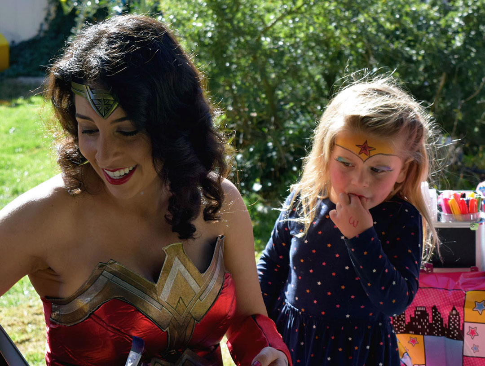

1 / 3
Carmen Pangelinan’s home, Paso Robles || February 8, 2020 || Carmen Pangelinan prepares for Molly Dailey’s fifth birthday party by watching Wonder Woman and going over her checklist to ensure she has all of her supplies for face painting, balloon animals and glitter tattoos.
2 / 3

Dailey residence, Paso Robles || February 8, 2020 || “I’m always so glad when the parents put out a balloon beacon, it lets me know I’m in the right place,” Pangelinan said. She no longer gets nervous walking up to the parties because she’s been performing for over six years, but in the beginning, she would count to five to calm her nerves before walking into a party.
3 / 3
Molly Dailey, wearing a pink Wonder Woman shirt and tutu, is first up for face painting. Upon Pangelinan’s arrival, Dailey announced she had a lot of questions for Diana, Princess of Themyscira, Daughter of Hippolyta. She stumbles over ‘Themyscira’ when saying it, but insists on using Wonder Woman’s full name.
3 / 3
While face painting was a natural transition for Pangelinan, who had a passion for art growing up, making balloon animals was a whole other challenge. “I was afraid of balloons prior to that, but I learned in one day,” Pangelinan said.
3 / 3

Mia, Molly Dailey’s friend, waits to ask Pangelinan to prove she really is Wonder Woman. Luckily, Tamara Dailey, Molly’s mom, warned Pangelinan that many of the kids had questions, so she was prepared. “I guess what I’m going to say to her because the lasso of truth is not going to really work, it’s a prop, is ‘I cannot test this on little children because when they are trying to tell a lie it’s actually painful and I can’t hurt them,’ so that’s in my head how I’m going to answer them,” Pangelinan said.
3 / 3
Molly Dailey takes the first swing at the piñata, but Tamara Dailey, is quick to step in to stop her from breaking the piñata before the other kids get a turn. “Molly’s a firecracker, she’s an independent girl and I think that’s why she loves Wonder Woman so much,” Tamara Dailey said.
3 / 3
Tyler, wearing a green and black shirt and Batman face paint, breaks the piñata before everyone has gotten a turn. He doesn’t break the piñata all the way and continues swinging as the other kids rush over to grab the candy. The parents yell at him to stop swinging. Tyler notices the candy on the ground and puts the bat down and fills his bag.
3 / 3
Dailey blows out her birthday candles with the unintended help of her friend Mia (right). Jenny, wearing a super girl costume, backs away from the candles as the wind blows the flames in her direction. “I wasn’t scared, but mom said not to blow out the candles this time.” Jenny said.
3 / 3
Molly Dailey wanted to eat part of the cake with Wonder Woman’s face on it, but soon discovers she doesn’t like fondant. “Blechkk,” Dailey said, peeling the fondant off her piece of cake and dropping it on the table. Tamara Dailey, shakes her head and peels the fondant off the table and drops it in the trash.
3 / 3
“Did you know I’m going to two parties today?” Molly’s friend Mia said. Her comment makes Molly Dailey very upset and causes her to run to the bounce house and hide. Tamara Dailey, is quick to step in and coaxes her out of the bounce house. Mia apologizes and the two go back to being friends.
3 / 3
Pangelinan’s favorite part of being a children’s entertainer is seeing the looks on the kid’s faces when they see their face paint for the first time. Julie was upset when she got to the party because she wasn’t wearing a wonder woman costume like many of the other girls, but after she got her face painted, she was all smiles. “That’s why I do it,” Pangelinan said. “I mean how can you not love this job after seeing how happy you can make people.”